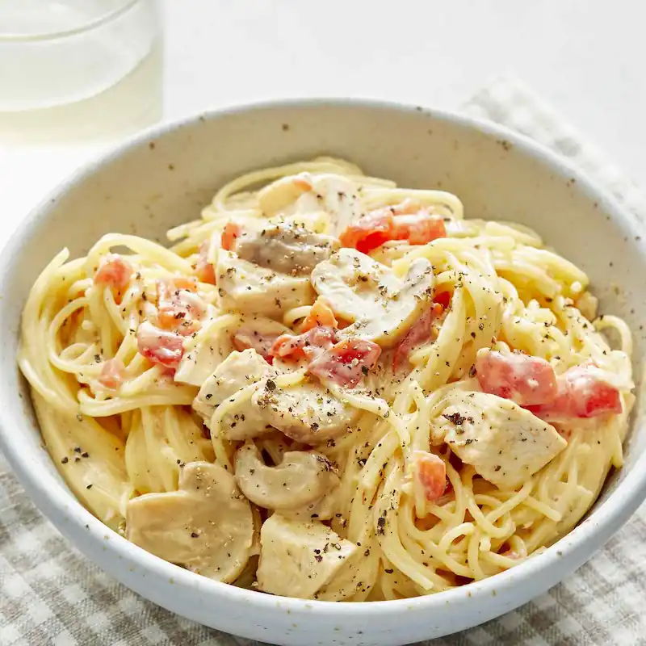

Chicken Spaghetti

The pasta and chicken combination is such a classic, but it won't make this recipe less valuable.
This easy and quick recipe will surprise you with how creamy and cheesy the spaghetti gets, and with
easily adaptable it is, you will love it.
Ingredients
- 1 (12 ounce) package angel air pasta
- 2 cups chopped cooked chicken breast
- 1 (10.5 ounce) can condensed cream of chicken soup
- 1 (10 ounce) can diced tomatoes with green chile peppers
- ¾ (8 ounce) package processed cheese, cubed
- ½ (4 ounce) jar sliced mushrooms, drained/li>
- Salt and pepper to taste
Steps
- Bring a large pot of lightly salted water to a boil.
Cook angel hair pasta in the boiling water, stirring occasionally, until
tender yet firm to the bite, 4 to 5 minutes.
Drain pasta and return it to the pot.
- Add chopped chicken, condensed soup, diced tomatoes with chile
peppers, processed cheese, mushrooms, salt, and pepper.
- Cook and stir over low heat until cheese is melted and mixture
is heated through, about 5 minutes.
- Serve hot and enjoy!
Home